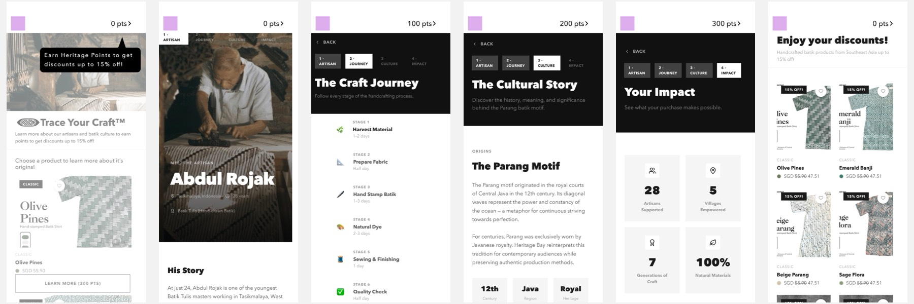

A companion app that rewards shoppers with Heritage Points for learning the craft behind a product, then sends them back to the website with a discount applied.
STUDENT WORK · SHARED AS A LEARNING REFERENCE

CLIENT
Heritage Bay
FORMAT
Companion mobile app
KEY MECHANIC
Heritage Points unlock 15% off
DELIVERABLES
Design document · Figma source
01 / OVERVIEW
The thinking.
From the problem they found to the experience they designed.
01 / THE GAP
The challenge
Most of Heritage Bay’s cultural background is hidden behind standard e-commerce pages.
Customers browse without understanding the cultural importance of what they see, view handcrafted products as expensive, and leave without an emotional connection.
02 / THE IDEA
The proposal
A “Trace Your Craft, 15% off” prompt on the website launches the app. Users pick a product and move through four chapters: the Artisan, the Craft Journey, the Cultural Story and Your Impact.
Each chapter earns 100 Heritage Points. At 300 points, users redeem 15% off and return to the website, where the discount is applied at checkout.
03 / THE VALUE
Why it works
Rewards make learning part of the purchase rather than an optional extra.
The Impact dashboard shows what a purchase supports: artisans, villages and generations of craft.
A shareable story card turns customers into advocates.
02 / JOURNEY
How it unfolds.
The user’s path through the experience.
01LaunchTap Trace Your Craft on the website and choose a product.
02The ArtisanMeet the maker and read his story.
03The Craft JourneyFollow each stage of the handcrafting process.
04The Cultural StoryLearn the history behind the Parang motif.
05Your ImpactSee what the purchase makes possible.
06Redeem and shareUnlock 15% off, check out and share the story.
03 / VISUALS
Selected work.
Select an image to enlarge it. The full files are under Files.
01Overview: problem, opportunity and insight02UX flow03Persona and customer journey map04Selected prototype screens
FOR LEARNERS
What to look for.
A reward loop that ends in a purchase, closing the gap between learning and buying.
The Impact dashboard as a way to make the brand’s mission tangible.
A clear, persona-led journey map that surfaces the “why is it so expensive?” moment.
04 / PROTOTYPE
Open the prototype.
Download the student’s Figma source file (15.2 MB), then import it into Figma to explore the screens and interactions.